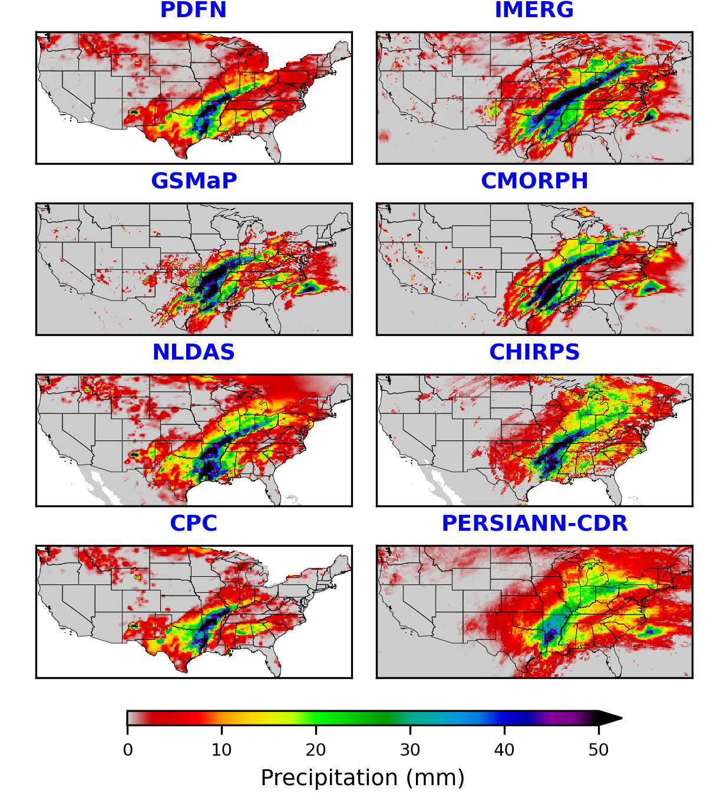
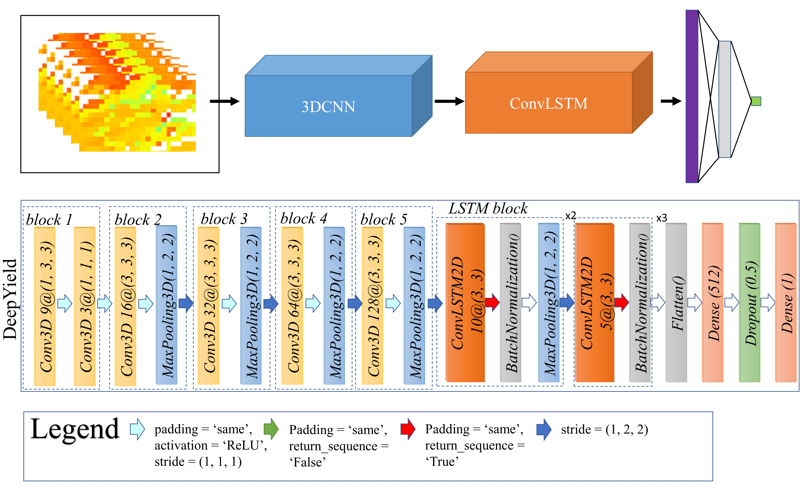
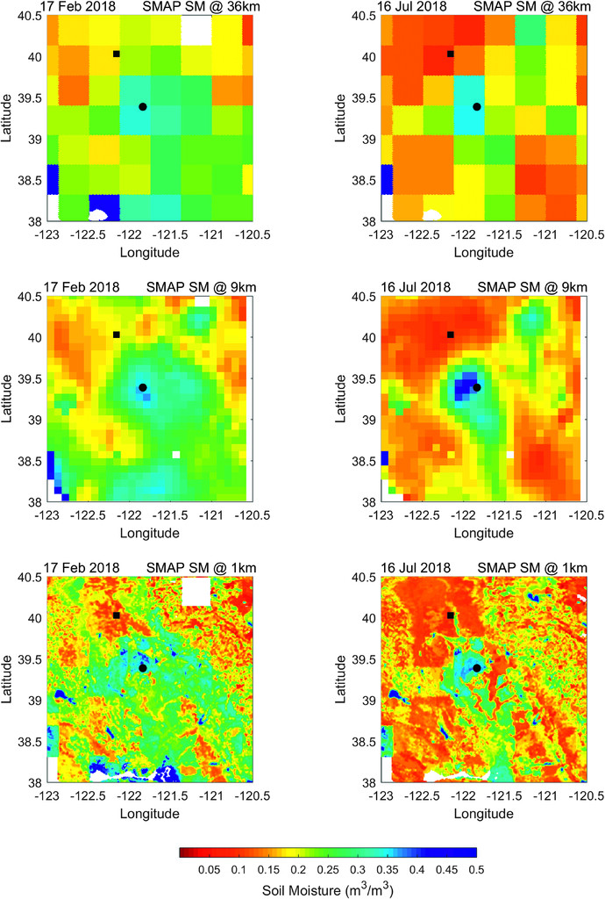
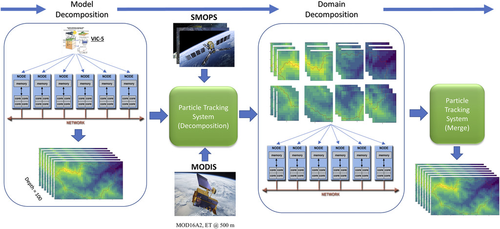
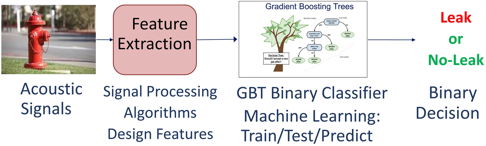

 Accurate quantitative precipitation estimation (QPE) is essential for various applications, including land surface modeling, flood forecasting, drought monitoring and prediction. In situ precipitation datasets, remote sensing-based estimations, and reanalysis products have heterogeneous uncertainty. Numerous models have been developed to merge precipitation estimations from different sources to improve the accuracy of QPE. However, many of these attempts are mainly focused on spatial or temporal correlations between various remote sensing sources and/or gauge data separately, and thus, the developed model cannot fully capture the inherent spatiotemporal dependencies that could potentially improve the precipitation estimations. In this study, we developed a general framework that can simultaneously merge and downscale multiple user-defined precipitation products by using rain gauge observations as target values. A novel deep learning-based convolutional neural network architecture, namely, the precipitation data fusion network (PDFN), that combines multiple layers of 3D-CNN and ConvLSTM was developed to fully exploit the spatial and temporal patterns of precipitation. This architecture benefits from techniques such as batch normalization, data augmentation schemes, and dropout layers to avoid overfitting and address skewed class proportions due to the highly imbalanced nature of the precipitation datasets. The results showed that the fused daily product remarkably improved the mean square error (MSE) and Pearson correlation coefficient (PCC) by 35% and 16%, respectively, compared to the best-performing product.
 Crop yield forecasting is of great importance to crop market planning, crop insurance, harvest management, and optimal nutrient management. Commonly used approaches for crop prediction include but are not limited to conducting extensive manual surveys or using data from remote sensing. Considering the increasing amount of data provided by remote sensing imagery, this approach is becoming increasingly important for the task of crop yield forecasting and there is a need for more sophisticated approaches to extract the inherent spatiotemporal patterns of these data. Although considerable progress has been made in this field by using Deep Learning (DL) methods such as Convolutional Neural Networks (CNN), no study before has investigated the use of Convolutional Long Short-Term Memory (ConvLSTM) for crop yield forecasting. Here, we propose DeepYield, a combined structure, that integrates the ConvLSTM layers with the 3-Dimensional CNN (3DCNN) for more accurate and reliable spatiotemporal feature extraction. The models are trained by using county-based historical yield data and MODIS Land Surface Temperature (LST), Surface Reflectance (SR), and Land Cover (LC) data over 1836 primary soybean growing counites in the Contiguous United States (CONUS). The forecasting performance of the developed models is compared against the competing approaches including Decision Trees, CNN + GP, and CNN-LSTM and results indicate that DeepYield significantly outperforms these techniques and also performs better than both ConvLSTM and 3DCNN.
 This study introduces a novel framework that utilizes ensemble learning techniques and incorporates atmospheric and geophysical data obtained from remote-sensing and ground-based observations. The objective is to downscale the Level 3 daily composite version (L3_SM_P) of SMAP radiometer soil moisture over the Continental United States, achieving a spatial resolution of 1 kilometer. To accomplish this, a Python package was created to automate the downloading and preprocessing of necessary datasets, employing the Random Forest method for downscaling the SMAP dataset from 36 kilometers to 1 kilometer. The proposed approach leverages various remotely sensed and in situ datasets, including soil texture, topography, and other relevant information. The downscaled product was rigorously validated against in situ soil moisture measurements collected from two high-density validation sites and 300 sparse soil moisture networks across the Continental United States. On average, the unbiased Root Mean Square Error between the downscaled SMAP soil moisture data and in-situ soil moisture observations satisfactorily met the required accuracy of 0.04 m3/m3 for SMAP soil moisture retrieval. Furthermore, additional statistical measures such as the Pearson correlation coefficient and bias exhibited favorable outcomes. The Python package developed for this purpose enables automated downloading and preprocessing of the essential datasets while utilizing the Random Forest method for downsampling the SMAP dataset from 36 kilometers to 1 kilometer.
 In this study, we assimilate two remotely sensed datasets, namely, Soil Moisture Operational Product System (SMOPS) and MODIS evapotranspiration (MODIS16 ET), at 1-km spatial resolution, into the VIC land surface model by means of an evolutionary particle filter method. To achieve this, a fully parallelized framework based on model and domain decomposition using a parallel divide-and-conquer algorithm was implemented. The findings show improvement in soil moisture predictions by multivariate assimilation of both ET and SM as compared to univariate scenarios. In addition, monthly and weekly drought maps are produced using the updated root-zone soil moisture percentiles over the Apalachicola–Chattahoochee–Flint basin in the southeastern United States. The model-based estimates are then compared against the corresponding U.S. Drought Monitor (USDM) archive maps. The results are consistent with the USDM maps during the winter and spring season considering the drought extents; however, the drought severity was found to be slightly higher according to DA method. Comparing different assimilation scenarios showed that ET assimilation results in wetter conditions comparing to open-loop and univariate SM DA. The multivariate DA then combines the effects of the two variables and provides an in-between condition.
 This work presents an acoustic leak detection system for distribution water mains using machine learning methods. The problem is formulated as a binary classifier to identify leak and no-leak cases using acoustic signals. A supervised learning methodology has been employed using several detection features extracted from acoustic signals, such as power spectral density and time-series data. The training and validation data sets have been collected over several months from multiple cities across North America. The proposed solution includes a multi-strategy ensemble learning (MEL) using a gradient boosting tree (GBT) classification model, which has performed better in maximizing detection rate and minimizing false positives as compared with other classification models such as KNN, ANN, and rule-based techniques. Further improvements have been achieved using a multitude of GBT classifiers combined in a parallel ensemble method called bagging algorithm. The proposed MEL approach demonstrates a significant improvement in performance, resulting in a reduction of false positives reports by an order of magnitude.